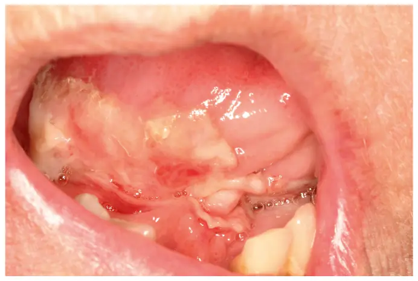
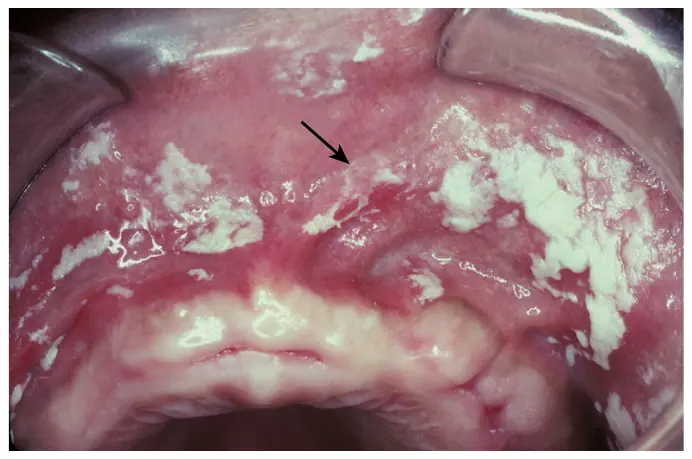

نسخه استخراجشده؛ ترجمه یا تأیید علمی انجام نشده است. وضعیت: captured
خانم ۴۶ سالهای با سرطان پستان ده روز پس از دورهی دوم شیمیدرمانی آمده است. کنارهی زبان و مخاط گونهاش زخمهای دردناک دارد و بهسختی غذا میخورد، ولی لثهی چسبنده و کام سخت سالماند. چه شده است؟

این موکوزیت دهانی است: التهاب و زخم مخاط، چون شیمیدرمانی به سلولهای پرتکثیر اپیتلیوم دهان هم آسیب میزند.
موکوزیت شدید گاهی انکولوژیست را وادار میکند دوز درمان را کم کند یا آن را عقب بیندازد.
درمانهای تازه: مهارکنندههای mTOR زخمهای کوچک شبیه آفت میدهند که با دهانشویهی دگزامتازون بهتر میشوند. مهارکنندههای checkpoint ایمنی ضایعهی لیکنوئید میدهند که با استروئید موضعی کنترل میشود.
شیمیدرمانی مغز استخوان را سرکوب میکند: نوتروپنی راه عفونت را باز میکند و ترومبوسیتوپنی راه خونریزی را.

پلاکت زیر ۵۰٬۰۰۰ (و بهویژه زیر ۲۰٬۰۰۰) با ضربهی جزئی مثل گاز گرفتن زبان یا مسواک خونریزی میدهد: پتشی کام، پورپورای کنارهی زبان و تراوش خون از لثه. بهداشت ضعیف این خونریزی را بدتر میکند.
اگر اقدام موضعی جواب نداد، با انکولوژیست برای تزریق پلاکت هماهنگ کن.